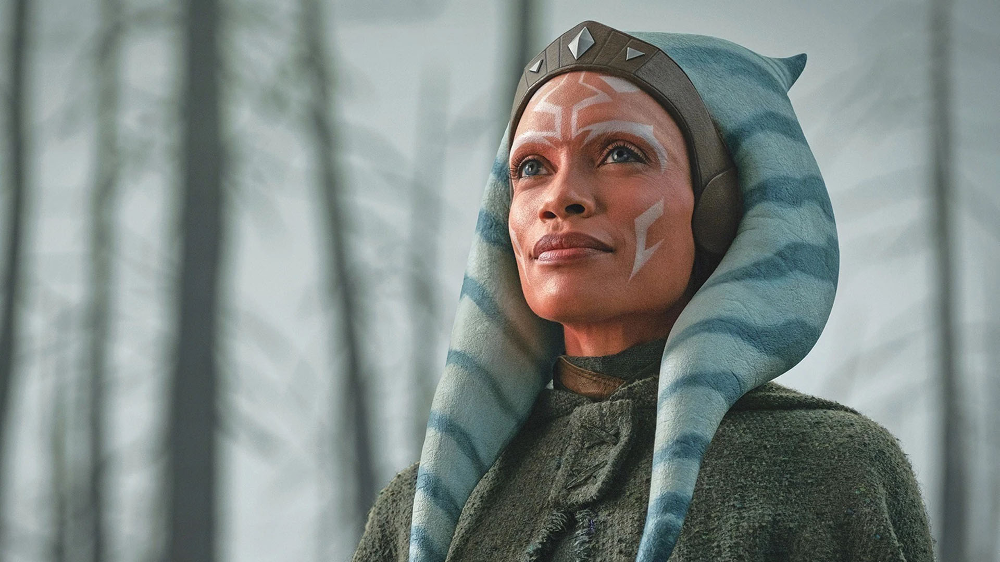
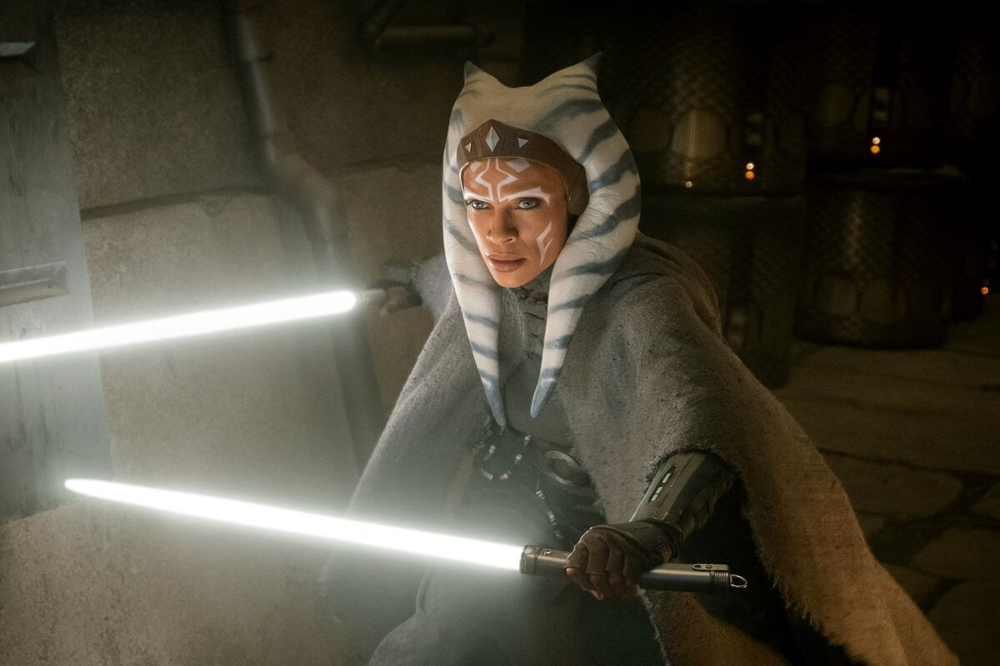

Ahsoka Tano
Voller Name: Ahsoka Tano
Geschlecht: Weiblich
Spezies: Togruta
Herkunft: Shili
Augenfarbe: Blau
Hautfarbe: Orange mit weißen Gesichtsmustern

Geburtsjahr: ca. 36 VSY (Vor der Schlacht von Yavin)
Meister: Anakin Skywalker
Lichtschwertfarbe: Grün (zuerst), später Blau, dann Weiß
Berufung: Jedi-Padawan → Ex-Jedi → Rebellin → Frei agierende Kämpferin

Erste Erscheinung: Star Wars: Clone Wars (Film, 2008)
Bekannt aus: The Clone Wars, Rebels, Mandalorian, Ahsoka (Serie)
Synchronsprecherin: Ashley Eckstein (Original), Rosario Dawson (Live Action)